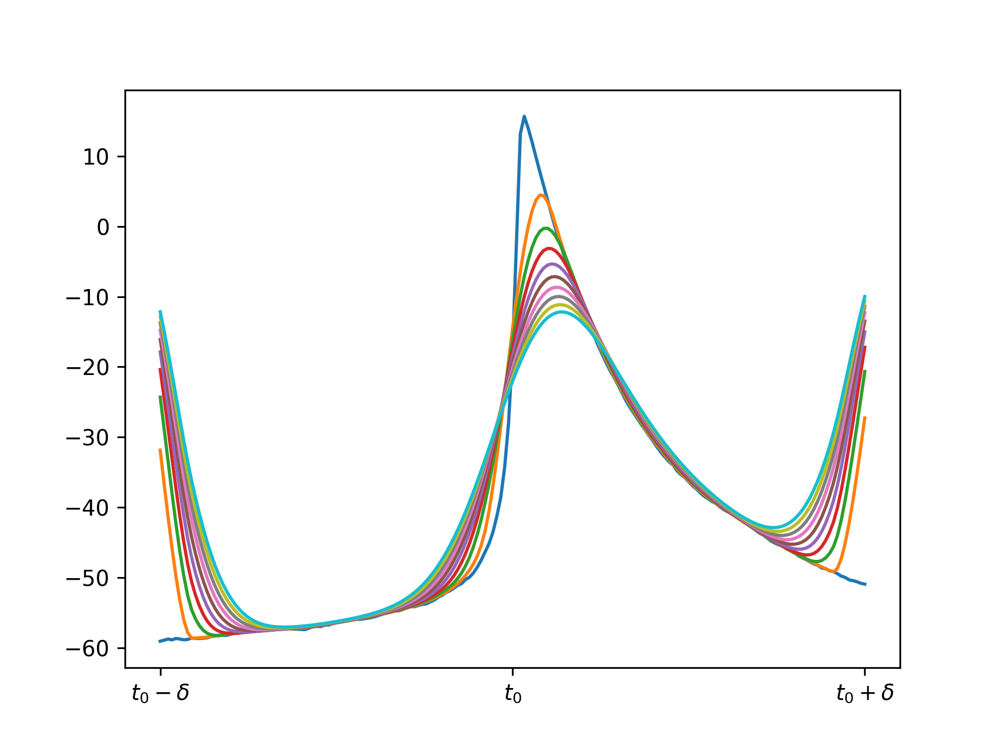
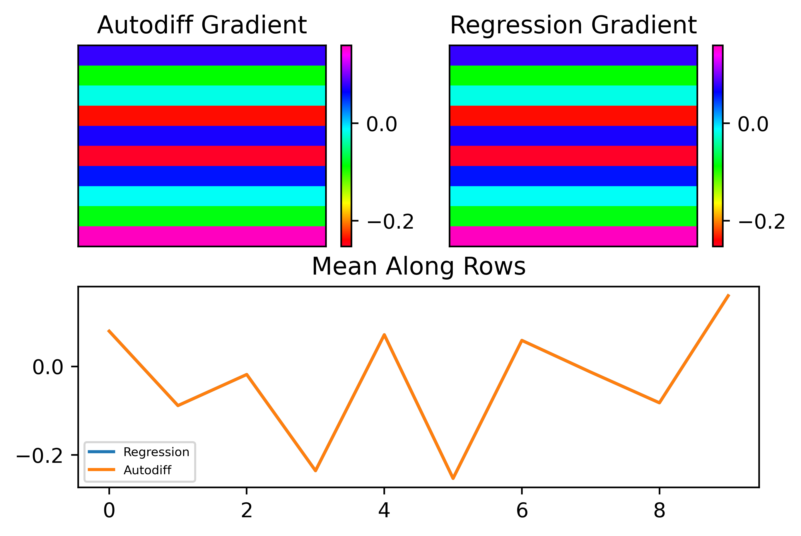
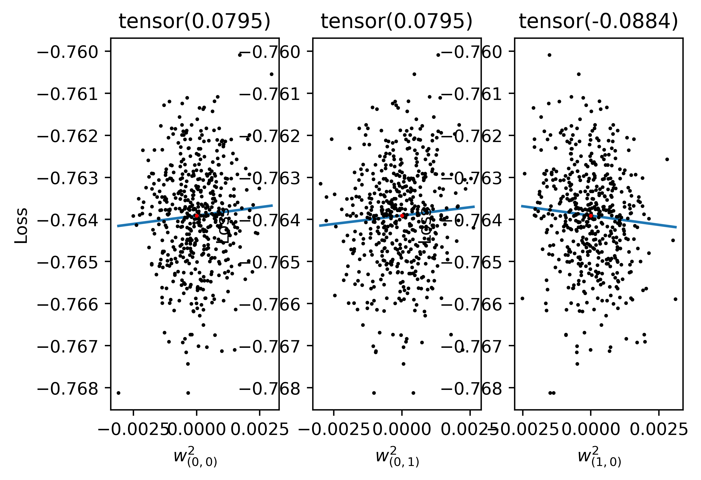
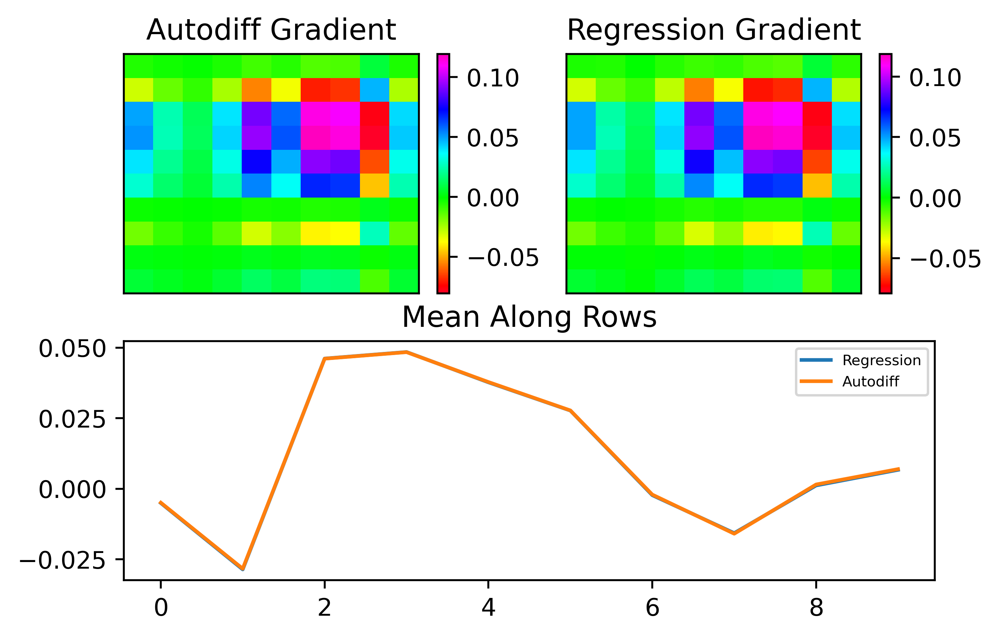
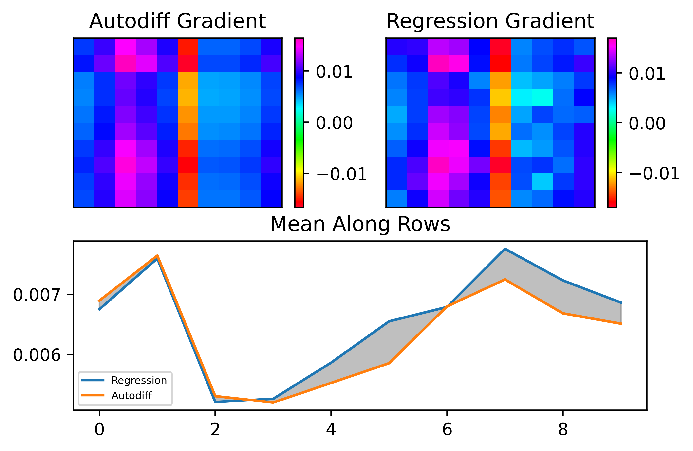
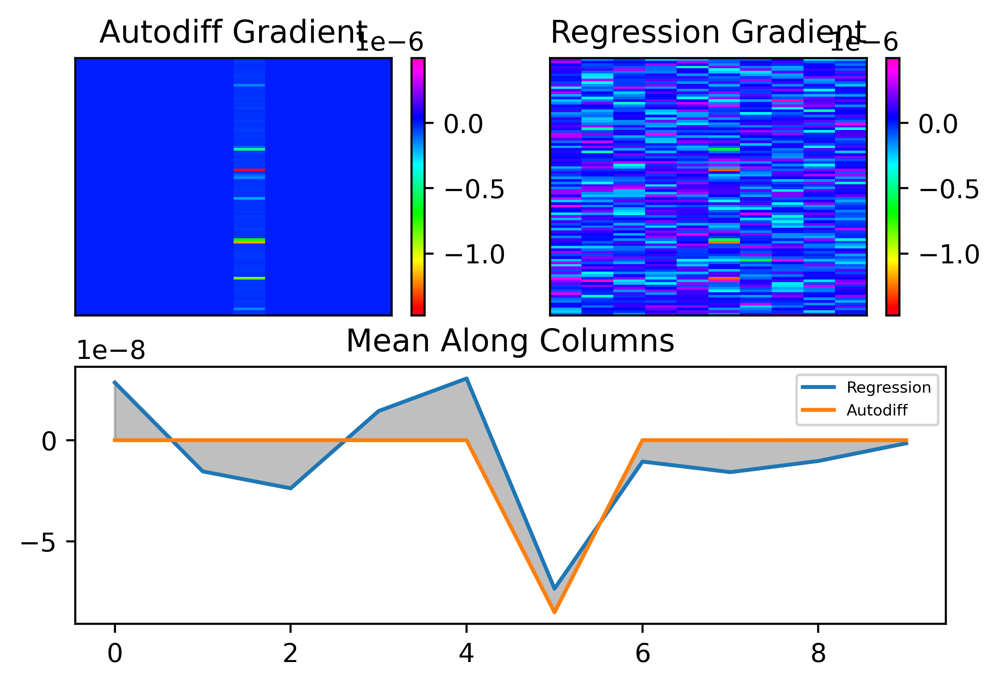
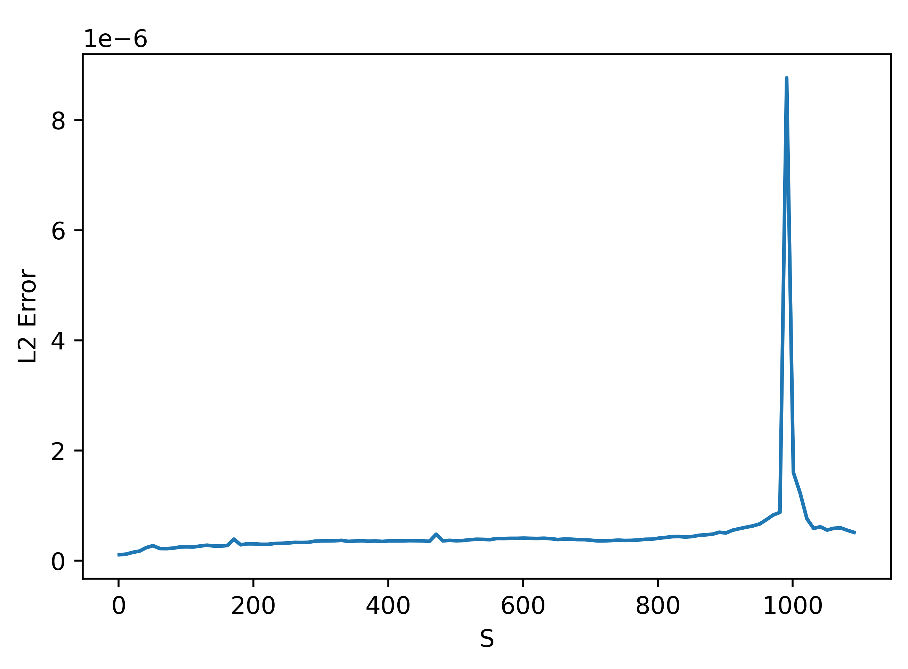
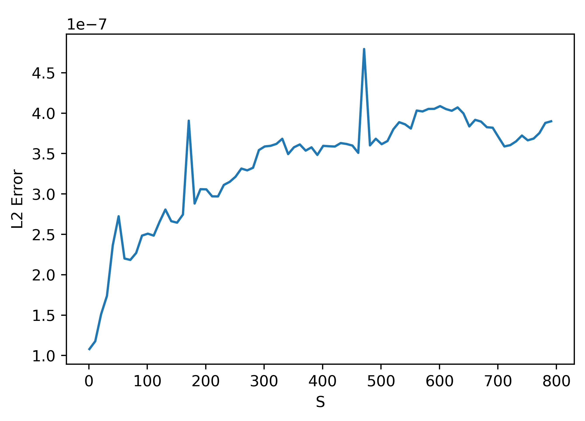
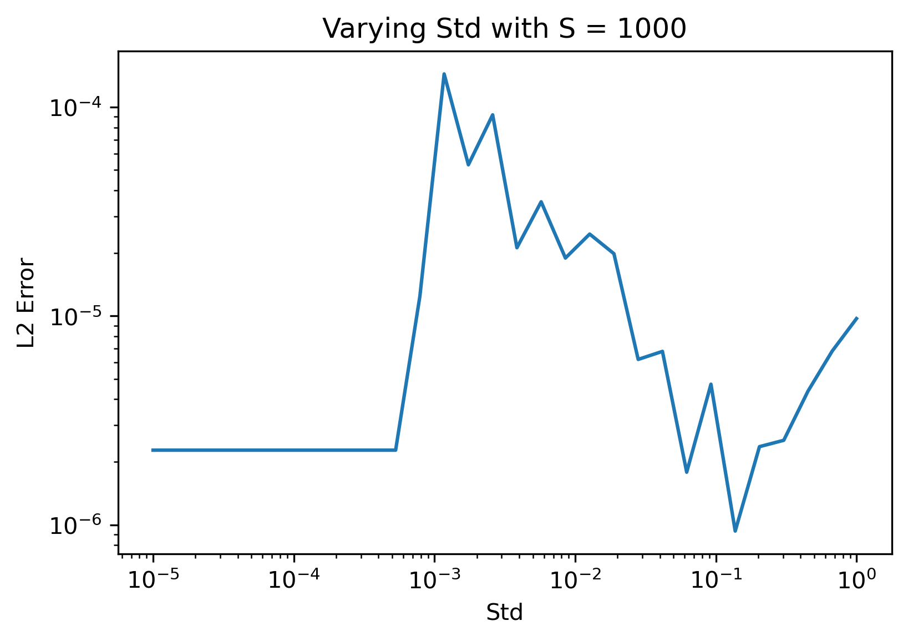
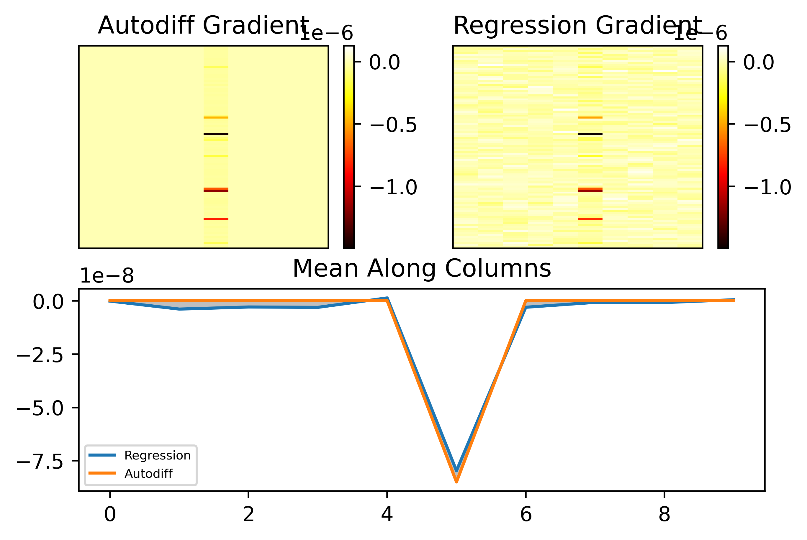

Loss Landscapes Emerging from BNNs
- Introduction
- Most Simple Case
- Mollification
- Training Complete Graph
- Computing Gradient of Molified Loss
- Real Application: MNIST
- Signal Processing Approaches
- Useful References
Introduction
My research is currently focused on training network of biological neurons (BNNs) on machine learning (ML) tasks. In another post, I dive into a specific task well suited for BNNs: training BNNs on spiking data. In that work, I encountered a number of issues. One issue was designing a clear loss reflecting the desired solution of the BNN. I found that the loss landscape* exhibited discontinuities and very chaotic gradients at the micro scale but had structure at the macro scale. This blog post focuses on analyzing loss landscapes for some simple examples with the aim of building up some understanding and proposing solutions to facilitate training in such contexts.
* The loss landscape is a surface of losses on a subset of the data resulting from small perturbations in network parameters. For example, if the network, \(N_w\), just has one parameter, \(w\), then the loss landscape is the set \(\{\text{loss}(N_{w'}(X),Y^*) | w - \delta w \leq w' \leq w + \delta w\},\) where \(\delta w\) is specified and \(X, Y^*\) are the inputs and targets, respectively, for the subset of samples.
Most Simple Case
The simplest case I considered here was simply turning a single Hodgkin-Huxley (HH) neuron off, so that it does not spike anymore. Let \(\eta = (V, m, n, h)\) denote the neuron state which is composed of voltage and gating variables. If \(a(t)\) is the output of the neuron at time \(t\), then we can let the loss just be the average output over some time interval \(\tau\): $$L(\eta) = \frac{1}{\tau} \int_0^\tau a(t) dt.$$ Ultimately, we aim to minimize \(L\), meaning that the neuron outputs as little as possible.
Loss Landscape
First, let's generate the loss landscape by running a single neuron trial with a time interval \(\tau = 1\) second, and evaluating the final loss. Varying the single weight parameter \(w\) gives the following results, where blue denotes loss and orange denotes number of firings:
 Note that around \(w = 1.8\) is where the neuron undergoes a bifurcation and the behavior changes, leading to no firing. This is due to the fact that a neuron can only fire so many times within a given interval.
Note that around \(w = 1.8\) is where the neuron undergoes a bifurcation and the behavior changes, leading to no firing. This is due to the fact that a neuron can only fire so many times within a given interval.
We can also look at a subset of the plot for more clear detail. Here is a zoom in on the range \(w \in [0.5, 0.75]\):

These plots demonstrate some key problems with the task and performing gradient descent. In particular, the zoom in shows that the loss changes chaotically on the micro scale and any approximate gradients would have to be almost infinite to approximate these changes. Furthermore, there are large discontinuous jumps in the loss when a the number of firings changes. Regarding the former problem, it might seem that we can increase the resolution very high so that the micro changes are more smooth. However, increasing the resolution cannot fix the latter problem because changes in firing still cause discontinuous jumps no matter what the resolution because this is an integer valued discontinuous function itself.
At this point, the goal may seem hopeless. How can we get gradients from something so chaotic? Let's understand what is causing the issues. Note that we are using a fixed timeframe \(\tau\) which may not be sufficiently long. Even worse, we are only using a single neuron to evaluate the loss curve. If we let \(N_{trials}\) denote the number of neurons we use to sample the loss, in the limit \(\tau, N_{trials} \rightarrow \infty\) the big varied jumps in the loss curve should go away. So, let's add noise to each neuron (with fixed initial conditions for now) and increase \(N_{trials}\). If we let \(N_{trials} = 10\), below is the resulting loss curve:

As can be seen, the discontinuities are much less extreme. Let's also zoom in as we did above:

Wow! A curve that previously looked like a discontinuous mess now appears to be almost completely straight! This makes sense because each of the 10 trial neurons fires at different times and so the effects of firings are much less abrupt for a single trial. We can still see some high frequency noise in the curve but otherwise it looks much better.
Gradient Descent on This Landscape
Approximate Approach
The next step in analysis of this very simple case is actually trying out gradient descent as an optimization method. Firstly, let's try a finite difference approach based on the precomputed loss curve. Suppose we are given the loss curve as a set: $$\{(w_i, L(w_i)) | w_{i+1} = w_i + \Delta w, i=1...n\}.$$ Instead of automatically differentiating to compute gradients of \(L\) with respect to \(w\), we can just use a centered difference approximation: $$\frac{\partial L}{\partial w_i} \approx \frac{L(w_{i+1}) - L(w_{i-1})}{2 \Delta w}.$$ We can then use this approximate derivative to do a gradient descent step: $$w \mapsto w - \eta \frac{\partial L}{\partial w}.$$ Finally, since we are operating on the set of points \(w_i\), we can round to the nearest gridpoint (which should not be a big change with a high resolution grid).
Let's see what happens with varied initial values of \(w\) and learning rates \(\eta\). First, below is a plot with initial \(w = 1.5, \eta = 0.1\):
 Note that the gradient descent gets "stuck" because it keeps jumping between two values. Here is the same case but with \(\eta = 0.2\):
Note that the gradient descent gets "stuck" because it keeps jumping between two values. Here is the same case but with \(\eta = 0.2\):
 In this case, one of the approximate gradients is simple 0 (i.e. the curve is flat at this point) so it gets stuck again.
In this case, one of the approximate gradients is simple 0 (i.e. the curve is flat at this point) so it gets stuck again.
Things are not looking that good. The issue is that at the micro scale there is a lot of noise in the curve even though it posses a tangent that is quite clear without the noise. This suggests a possible fix: let's try using multiple sample points to compute the approximate tangent. To do so, we can select points locally to the left and right of the sample point then use a linear regression fit to approximate the tangent. Here is an example of such fitting at a point on the loss plot with 5 neighbors sampled to both the left and right:

If we use an adaptive value of \(\eta\) that grows over learning (so that we don't get stuck as above) and the linear regression approach with 10 local neighbors, we get convergence:

Mollification
One possible avenue for generating loss landscapes that are more easy to do gradient descent on is "molification." Mollification is the application of a "molifier" to a badly behaving function (e.g. very jagged with discontinuities) through an operation such as convolution. A molifier is defined by the following criteria:
I intuitively think of the final criteria as requiring that the function "looks like" a discontinuous jump at the \(n\)th derivative scale. Here is an example of a function undergoing progressive molification from Wikipedia (which, incidentally, I think they used ray-tracing to produce):

The canonical molifier is the bump function \(\phi(x)\) on \(\mathbb{R}^n\) defined by $$ \phi(x) = \begin{cases} k_n e^{\frac{1}{|x|^2 - 1}} & |x| \lt 1 \\ 0 & |x| \geq 1 \end{cases},$$ where \(k_n\) is chosen to be one over the volume so that condition (2) above is satisfied:

Note that is might be tempting to use a function like a Gaussian blob as a molifier, but such a function is not compactly supported even though is gets very small as we let \(x\) grow.
Applying to BNN
There are two conceivable ways of applying molification to our task. Firstly, we can simply apply molification to the final loss function. This has a more straight-forward effect on the loss but it has the disadvantage of requiring us to compute all losses in a local neighborhood to perform molification at one point. Secondly, we could apply molification over time to the voltage trace outputted from a particular neuron. The idea with this is to "smooth" out the spikes leading to better gradients and is very related to the surrogate-gradients approach. The main difference is that in these approaches they are working with discontinuous neurons (leaky-integrate-and-fire) and most of the papers I have seen using this approach make LIF neurons continuous by completely disregarding gradients when spikes occur.
Approach 1: Mollifying Loss
Here is a molifier using the scaled bump from above, where \(c\) is chosen to be some small value:

If we molify the loss directly it removes the noise at the small scale and makes the loss curve much more tractable for gradient descent:
If we apply gradient descent as above to this, we get convergence faster and much more clear gradients. This is seen below. Approximate gradients with a finite difference are used (no linear regression unlike above), and the learning rate is adaptively scaled up over epochs:


Another approximate notion of mollification is bluring is a distribution. This is not real mollification because some distributions (e.g. Gaussian) do not have compact support. However, outside of a sufficiently large sphere, they are almost exactly zero and so we can think of them as mollifying functions. Below is an example of a 2D Gaussian blob. As we will see below, using a distribution for mollification allows us to neatly mathematically work with the loss using expected values.

Approach 2: Mollifying Voltage
Here is a raster plot and some example traces of 1000 neuron voltages with random noise and no transient and with the same input weight. 10,000 timesteps were used for simulation:


Let's try molifying the voltages. First, let \(t_0\) denote the time of the first spike occurence for the first voltage trace above. Let's zoom in around \(t_0\) for this voltage:

If we apply the same molifier as above with appropriate \(c\) (I chose it to be 10 timesteps), repeated application gives these results:
Note there is an issue at the borders because at these edges we are trying to do a convolution so we need to use "ghost points" that do not exist. This is not an issue in practice because we can just molify the full voltage trace over many timesteps and truncate the transient and final few timesteps.
Computing Gradient of Molified Loss
I was suggested to look at the "log-likelihood trick" outlined here to compute the mollified loss gradient. I will work through the math here; it seems very promising.
Notation
Firstly, some notation. Let's denote the parameters of the network by \(\theta\) and the network as a function \(N_\theta(x)\), where \(x\) is the input sample or mini-batch of samples. Next, let's denote a distribution (e.g. Gaussian blob) at \(\theta\) in the parameter space by \(p_\theta(v)\). We draw parameters \(v \in \mathbb{R}^m\) for the network from this distribution, where \(m\) is the number of parameters (weights).
Now, the smoothed loss can be expressed as an expected value over the distribution, or in simpler words, a weighted sum in some neighborhood. In particular, the smoothed loss looks like: $$\mathcal{L}^{smooth}_\theta(x) = \int_{v \in \mathbb{R}^m} p_\theta(v) f(N_v(x)) dv.$$
Then, let's differentiate with respect to the parameters \(\theta\). Since we are thinking of parameters as lying in \(\mathbb{R}^m\), then the derivative we need for gradient descent is just a vector in \(\mathbb{R}^m\) and is the gradient: $$\nabla_\theta \text{ } \mathcal{L}^{smooth}_\theta(x) = \nabla_\theta \text{ } \int_{v \in \mathbb{R}^m} p_\theta(v) f(N_v(x)) dv.$$ Assuming Leibniz rule holds, this is $$= \int_{v \in \mathbb{R}^m} (\nabla_\theta \text{ } p_\theta(v)) f(N_v(x)) dv$$ It might seem like we need to gradient the second term also, but if you look at Leibniz rule this is not the case since \(f(N_v(x))\) depends on \(v\), not \(\theta\). Note the advantage of the above term: we do not need to backpropogate on the network to compute it!!. This means we can avoid any complexity involved with backpropogation on the network such as non-differentiability, etc! This seems like a massive advantage in my opinion.
Finally, let's finish up by making the above integral more feasible to compute. In particular, let's multiply by one then use the log derivative identity: $$= \int_{v \in \mathbb{R}^m} \frac{p_\theta(v)}{p_\theta(v)} (\nabla_\theta \text{ } p_\theta(v)) f(N_v(x)) dv$$ $$= \int_{v \in \mathbb{R}^m} p_\theta(v) \cdot [\nabla_\theta \log(p_\theta(v))] f(N_v(x)) dv$$ $$= \mathbb{E}_{p_\theta(v)}[f(N_v(x)) \nabla_\theta \log(p_\theta(v))].$$ To compute this, we can use a Monte-Carlo estimate like in the blog I linked above: $$\approx \frac{1}{S} \sum_{s=0}^S f(N_{v^{(s)}}(x)) \nabla_\theta \log(p_\theta(v^{(s)})),$$ where we draw the random parameters \(v^{(s)}\) from this Gaussian blob (this can be done practically by just adding a noise term to weights in each layer of the network!).
Quick Note: Computing Log of Distribution is Usually Nicer
This is not particularly important in the case of BNNs, because computing the BNN is much harder than computing a single distribution, but it should be noted that one reason why the log trick is used is because the log derivative term is usually much simpler than the original distribution computation. This is very clear in the example of a 1 dimensional normal distribution given by: $$p_\theta(v) = \frac{1}{\sigma \sqrt{2 \pi}} e^{-\frac{1}{2} (\frac{v - \theta}{\sigma})^2}.$$ When we take a log of this, the exponential cancel out: $$\log p_\theta(v) = \log(-\sigma \sqrt{2 \pi}) -\frac{1}{2} (\frac{v - \theta}{\sigma})^2.$$ Finally, when we take the derivative with respect to \(\theta\), we get the really simple term: $$\frac{\partial}{\partial \theta} \log p_\theta(v) = \frac{v - \theta}{\sigma^2}.$$ So, this elegant term is just a linear function measuring the signed distance from the mean \(\theta\) divided by the variance.
Related References for Monte-Carlo
The next step with the Monte-Carlo approach or integration approach is to compare them and see which works better. It appears that the integration approach is more accurate for smaller number of samples in 1D. For example, the plot below uses the same number of samples (100) for the integration approach and Monte-Carlo log approach to compute the smoothed gradients at each points from -10 to 10 of some toy example loss. As can be seen, the fact that the loss grows quadratically on the borders makes the Monte-Carlo also blow up in these regions but does not affect the integral approach. NOTE: It seems like what we are computing is a value function


I did find that if we increase the number of samples \(S\) for the log trick sufficiently high (e.g. 1,000 samples) it does converge to the right thing. The above might suggest that integration methods are better in this case. However, the integration approach does not generalize well when we use a real network parameter set that could be millions of dimensions. On the other hand, it appears from my preliminary search of what is available around that Monte-Carlo avoids the "curse of dimensionality" meaning hopefully that we can use it in many dimensions. We will still have to figure out a way of using less samples, but if the number of samples does not depend on the dimension this is certainly very promising. I also found that there are methods called sparse grid methods that do integration in a way that avoids dimensionality issues. Here are some random sources from the internet, mostly just so I don't lose them:
- Stochastic Neural Networks
- Why Monte Carlo not affected by curse of dimensionality Stack Overflow post
- A similar Stack Overflow post with sources
- Sparse Grid Wikipedia
Todo Investigation Topics for This Approach
- Monte-Carlo sampling and error bounds
- Importance sampling
- Sparse grid
- Reinforce algorithm and policy gradients
- Q-learning
- Applying to: BNN, LIF network, binary network, stochastic network
Training Complete Graph
Above we looked at the simple task of turning off a single neuron. We can extend this to many neurons in a number of different architectural ways. For example, we can create a feedforward network, a chain of \(n\) neurons, \(n\) independent neurons with input, or, in perhaps the most complex case, a complete graph on \(n\) neurons. Let's consider the latter case in this section. Here is what I mean by a complete graph (on 5 nodes in this case):

Note that we include connections from a neuron to itself. We can connect up multiple complete graphs and add input output neurons to make things more complex, but for now, let's just consider an isolated complete graph with no input output. As above, let's consider the task of turning of the neurons, so we can let the loss be the mean output of all the neurons averaged over the timeframe.
One advantage I will mention related to the complete graph case is that the loss landscape is quite easy to visualize. In particular, if we have a lot of neurons and randomized connections from some distribution, because of the symmetry inherent in the complete graph, the loss landscape is essentially one dimensional with noisiness in each individual weight.
Loss Curves Multi Function
Let's analyze the loss in this more complex case. Even in the single neuron "complete graph" the loss is much more complicated. This case different from the case above because instead of the neuron getting a uniform input, it gets input from itself in a feedback loop:

Here is the loss curve:

As we can see, it appears extremely noisy. It turns out that the noise is due to multiple different "bands" of loss curves, which is clear if we zoom in and sample a 1000 points:

In this case, the loss really takes the form of a "multi function" and the notion of a derivative is essentially useless in its most direct form because the loss may jump between one of many different curves discontinuously! We can fit a linear regression, like above, to get a better estimate of a gradient (like the orange line shown), but this also doesn't work particularly well to capture the curve.
Real Application: MNIST
Convergence of Linear Regression Method
As a first pass I'll use the linear regression method (which is easier to implement because there are multiple alternate ways to implement the Gaussian smoothing approach). On my first pass directly comparing this method to autodiff in the case of a smooth loss, autodiff worked perfectly and the regression method did not work at all. Thus, it is necessary to look at why the latter fails.
Linear Classifier
Let's first remove the dependence on a BNN and just use a linear classifier (i.e. a neural network with no activation functions). The architecture I used is as follows:

Note that we cannot easily visualize the full loss landscape in this setting. However, we can predict exact gradients using automatic differentiation and compare these to those computed using linear regression. This should allow us to get an idea of how the linear regression method can converge for different sample sizes and standard deviations.
Let's first work on an extremely simple case: let the input to the network be uniformly 1 and the loss function just be the mean output, so we want an output that is as negative as possible. In this case, the loss can be computed directly: $$z_1 = W_1 \cdot \mathbb{1},$$ $$z_2 = W_2 \cdot z_1,$$ $$L(z_2) = \text{avg}(z_2).$$ Note then that the Jacobian of the loss with respect to \(W_2\) is just a matrix where each column is equal to the average of \(z_2\) (this can be derived by hand by looking at the derivative with respect to an individual weight in \(W_2\)). Here's some empirical proof:


Let's see what happens when we apply the regression method with a very small standard deviation and a specific choice of \(S\). As \(S\) grows very larger (greater than or equal to the number of parameters), the approximation should be almost exactly the same. Below is an example where we isolate the first 10 rows of \(W_2\) and only fit the regression to these parameters, where we set \(S = 500\).
We can see that the results are almost perfect! One important thing to note that I found is that changing weights in all layers at once with noise gives bad results but when we apply noise to isolated weight layers one at a time, the results are much less noisy. This isn't a big deal, it just means we need to be a bit more careful about we distribute \(S\) between layers. For now, I will just look at fitting the gradient for \(W_2\).
To understand what is happening in the above figure, let's also try plot the losses isolated along particular parameters. Below I plotted the losses with respect to the value of a paricular weight. I isolated the weights in the first column and first row, second column and first row, first column and second row. As can be seen, the structure is almost identical for the former two but different for the latter. This explains why the gradient does not change between values in the same row, as expected!
Let's now move to the MNIST benchmark, where things are a little more complex. In this case, instead of the loss being the mean output of the neuron, it is based on the target desired digit and we use MSE loss. As can be seen, with sufficiently many samples, we can perfectly match the gradient:
We might now ask how the method converges to the autodiff result for this particular case. As it turns out, in this case we need \(S\) to be greater than or equal to the number of parameters being trained, unforunately. This is clear in the figure below:

This figure shows the L2 error between the autodiff gradient and the approximate gradient for the output layer isolated only. Since the hidden layer has 100 neurons and output layer has 10, there are 1000 parameters. As can be seen, after 1000 parameters we get good accuracy. I think the spike around 1000 samples may be due to some numerical instability around this value in the method, but I'm not entirely sure. What is most important is that we need a very large and infeasible \(S\) value in this case. Note however that the linear classifier is not a typical case. Because the function is strictly linear, it makes sense that we cannot perform a perfect inversion to get the gradient unless we have a well-conditioned setup.
Although this case may seem disheartening because we need such a large \(S\), for more practical cases I have found this is definitely not the case. To see this, let's move to an artificial neural network (ANN) on MNIST.
ANN
Let's now see the results with an ANN. In this case, I just inserted a sigmoid layer after the hidden and output layers of the network. Below is an example where we compute the output layer gradient as above.

As can be seen, the results are pretty good. Let's now look at convergence:

It seems like the gradient fitting still is not very good unless we use an \(S\) that approaches the number of parameters of the network. TODO: TEXT HERE.
Let's try fitting the network to MNIST now. I used a batch size of 10 and \(S = 100\) and alternated between the input and hidden layers for optimization in the regression method. Alternating like this is important because, as noted above, when we add noise in both layers at once it can skew the observed gradient in the output layer substantially.
Although \(S = 100\) is much lower than the number of parameters in each of the two layers (1000 parameters in \(W_2\) and 78,400 in \(W_1\)), optimization seemed to work pretty comparably well to the autodiff approach:
Success! We finally got something to actually work somewhat correctly!
The next step is to apply these principles to more complex scenarios we are actually interested in. Firstly, we need to prove the method can converge with a BNN in a circumstance where the network IS trainable with the vanilla autodiff method. Next--what we really care about--we need to show that the method can generalize and train the network in a circumstance where a BNN is NOT trainable with autodiff. These two circumstances are actually easy to create:
1. If we use a very small timeframe (e.g. 30ms), autodiff works effectively because only a few numbers of spikes can occur and the loss landscape is effectively smooth,
2. If we use a larger timeframe (e.g. 1 second), autodiff does not work because the loss landscape is very discontinous without a clear notion of derivative (see the many examples of this above).
BNN
Case 1: Small Timeframe
First, we will work on case 1 above: simulating a BNN for a very short timeframe. This has the advantage that the loss landscape is quite smooth and autodiff works for training normally. For details on how to train in this regime with MNIST, you can see my first paper (ADD CITATION).
In this circumstance, it turns out that training is quite a lot harder than with the ANN. Let's look at the results. Here's how the predicted second layer (1000 parameters) gradient looks with \(S = 1,100\):

As can be seen, even though \(S\) should be sufficiently large, the gradient prediction is terrible! Let's look at how the error depends on \(S\):

We can understand the trend before the peak at 1000 (the number of parameters by zooming in:

These results are very weird. They seem to suggest that using a smaller \(S\) actually gives better results!
One possible cause for this weird discrepancy could be that the loss I used in these cases was evaluated for a single trial of the BNN. Averaging over samples should potentially fix this as a side effect however. Another possible cause could be our choice of standard deviation. We can see that the method is somewhat succesful with the gradient prediction along the column with nonzero entries above, but there is a lot of noise that should be zero in the other columns. Let's see how the error varies with standard deviation:

From the plots above it appears that using a larger standard deviation actually gives significantly better results! I intuitively understand this as the larger standard deviation makes it so that high frequency noise around the paramter point has less of an impact on the predicted gradient. This can be seen in the plot below, where the only change was using a standard deviation of 0.15:

As can be seen, the entries that should be zero are now almost all zero, i.e. there is less of the small noise changing the prediction in the columns where the true gradient is zero. We can see that the gradient along this column is also well matched.
Case 2: Long Timeframe
Signal Processing Approach
This research is very open and I am considering a number of approaches. One that seems like a promising approach is using signal processing methods for training BNNs. This section will explore this.
Cross-Correlation
For real or complex functions \(f, g\) on some domain \(D\), their cross-correlation is defined as: $$(f \star g)(\tau) := \int_D \overline{f(t)} g(t + \tau) dt = \int_D \overline{f(t - \tau)} g(t) dt,$$ where \(\overline{f}\) is the complex conjugate and \(\tau\) is called the "lag". To understand this definition, if \(g(t)\) is a discrete signal and is just \(f(t)\) but shifted to the right by \(\tau\), then \(f \star g\) will be zero everywhere except at \(\tau = 1\), where it will be the integral of \(|f(t)|^2\), which is the squared L^2 norm of \(f(t)\). Note that if \(g, f\) are not signals and are continuously varying, then the cross-correlation will not be zero outside but will decay outside 1 and have a max at 1.
Cross-correlation loss: $$\text{Loss} = \int_0^T y(t) y^*(t + \tau) dt.$$